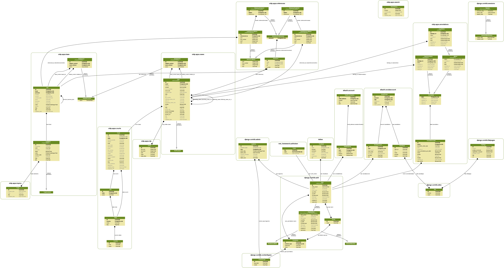

Database
As database backend you can use all Django-supported db adapters. However, the code is only tested with MySQL and SQLite.
Schema

(Show full-size image){kind=link}
Set encoding
Run the following commands to make MySQL support proper utf-8
# Check before
SHOW FULL COLUMNS FROM table_name;
ALTER TABLE logtest CONVERT TO CHARACTER SET utf8 COLLATE utf8_general_ci;
ALTER TABLE logtest DEFAULT CHARACTER SET utf8 COLLATE utf8_general_ci;
ALTER TABLE logtest CHANGE title title VARCHAR(100) CHARACTER SET utf8 COLLATE utf8_general_ci;
ALTER TABLE tablename MODIFY COLUMN col VARCHAR(255) CHARACTER SET utf8 COLLATE utf8_general_ci NOT NULL;
ALTER TABLE courts_court MODIFY COLUMN description CHARACTER SET utf8 COLLATE utf8_general_ci;
Change cases_case.content to utf-8:
# What is the current charset?
SELECT character_set_name FROM information_schema.`COLUMNS`
WHERE table_name = "cases_case"
AND column_name = "content";
# Copy table as backup
CREATE TABLE cases_case__bak LIKE cases_case;
INSERT cases_case__bak SELECT * FROM cases_case;
# Change
ALTER TABLE cases_case MODIFY content LONGTEXT CHARACTER SET utf8;
# In case something went wrong, restore from backup
RENAME TABLE cases_case TO cases_case__changed;
RENAME TABLE cases_case__bak TO cases_case;